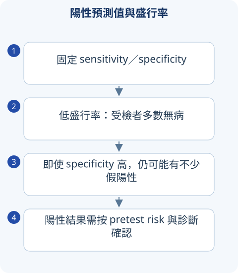

判讀圖解

詳讀 01預防與篩檢：對象、目的、後續
Primary prevention 減少發生，如疫苗／戒菸；secondary 在無症狀時早期發現，如適當篩檢；tertiary 減併發與功能損失，如復健。Screening 用於適當無症狀 population，positive 後需 confirmatory pathway；既有症狀者是 diagnostic workup。
好篩檢需疾病重要、可偵測的潛期、有適用檢驗與早治效益，且追蹤可完成。靈敏度高不等於必然改善死亡，偽陽、過診斷、程式傷害與成本也需評價。家庭史、遺傳、高 risk 可能有不同路線，不限於公費資格。
詳讀 02臺灣癌症篩檢與舊書區分
| 專案 | 國健署已核對的2025擴大方案 | 解題注意 |
|---|---|---|
| 大腸癌 | 45–74歲，以及40–44有特定家族史者，FIT 每2年1次 | FIT 陽性須診斷評估，不能重做陰性就忽略 |
| 乳癌 | 40–74歲婦女，mammography 每2年1次 | 超音波不是普遍替代；有症狀走 diagnostic |
| 肺癌 | 具肺癌家族史男性45–74／女性40–74，或50–74且≥20 pack-years 等適用條件，LDCT 每2年 | 須完整吸菸／戒菸等資格，不能只憑年齡 |
| 子宮頸與 HPV | 增列25–29歲及35／45／65歲適用 HPV 服務 | 不同年齡與專案間隔不同，檢視完整公告 |
寬表格可左右捲動
此表重點是與2020書的年齡差異，不把公費資格等同所有臨床建議。國考題若明確問某年政策應按該年；國際 USPSTF 與臺灣方案也不能互換。
詳讀 03診斷試驗：2×2 表與 Bayes
| 檢驗／真實疾病 | 有病 | 無病 |
|---|---|---|
| 陽性 | TP | FP |
| 陰性 | FN | TN |
寬表格可左右捲動
Sensitivity＝TP/(TP＋FN)，specificity＝TN/(TN＋FP)；PPV＝TP/(TP＋FP)，NPV＝TN/(TN＋FN)。Prevalence 上升通常 PPV 上升、NPV 下降，因此同檢驗在門診與 low-risk 篩檢預測值不同。
LR+＝sensitivity/(1−specificity)，LR−＝(1−sensitivity)/specificity。Pretest odds＝p/(1−p)，posttest odds＝pretest odds×LR，再換 probability。高度 sensitive negative／specific positive 的口訣需其效能、病程與 population，不能當無條件排除。
一個完整數字例子
1000人中 prevalence10%，sensitivity90%、specificity90%：100病人中 TP90/FN10；900無病 FP90/TN810。PPV＝90/180＝50%，NPV＝810/820≈98.8%。所以「90%敏感與特異」不等於陽性有90%真的患病。
詳讀 04治療效果：絕對與相對要一起算
ARR＝control event risk−treatment risk；RR＝treatment/control；RRR＝1−RR；NNT＝1/ARR，使用小數並說明期間，通常向上取整。NNH 按 absolute risk increase。例 control20%、treatment10%，RRR50%，ARR10個百分點，NNT10；若 control2%、treatment1%，同 RRR 但 NNT100。
Risk difference 有單位與時間，odds ratio 不等於 risk ratio，事件常見時差異更大。Confidence interval 含 null（RR／OR 為1，risk difference 為0）通常表示該雙側比較不夠明確，不是證明完全沒效果。
詳讀 05研究設計、bias 與統計
RCT 隨機降低已知／未知 confounding，allocation concealment 與 blinding 各防不同 bias；intention-to-treat 保留隨機分組，per-protocol 會受依從影響。Cohort 可算 incidence，case-control 按 outcome 取樣常估 OR，cross-sectional 偏 prevalence／關聯。
Screening 常見 lead-time、length-time、overdiagnosis：早診後存活時間變長不一定延後死亡，慢病更易被篩到，沒有造成臨床問題的病也可被發現。要看適當 mortality／harm 而非僅「存活年數變長」。
Type I 為 false positive α，Type II 為 false negative β，power＝1−β。P 值不是假設為真的機率、不是 effect size、也不是臨床重要性。Multiple testing、selection、publication bias 影響可信度；systematic review 還要 risk of bias、heterogeneity 與 evidence certainty，不能「meta-analysis」三個字就最高可信。
詳讀 06成人預防：疫苗、菸酒與風險溝通
預防安排需年齡、慢性病、免疫、孕期與既往接種，不僅背一張美國 schedule；non-live 與 live 在免疫抑制情境不同。戒菸可 behavior＋適當藥物，pack-year＝每天包數×年數；戒菸雖不能改已累計 pack-year，仍影響當前風險。
風險溝通用 absolute numbers、時間和相同 denominator 說明 benefit／harm。Shared decision 不是醫生不提建議，而是解釋證據、瞭解價值後共同決定；high-risk 與偏好需要分開。
檢驗特異度90%，陽性患者患病機率就是90%嗎？
不是。那是 PPV，需要 sensitivity 與 pretest probability。範例低盛行率即使效能不錯，也會很多假陽性。
比較錶速覽
讀完上方詳解後，用以下表格複習診斷差異與治療重點。
速覽｜1｜三段預防與研究設計
先釐清物件是未病、早期或已有功能影響。
| 層次／設計 | 要點 | 例子／陷阱 |
|---|---|---|
| Primary prevention | 降低疾病發生 | 疫苗、戒菸、暴露預防。 |
| Secondary prevention | 早期發現與處置 | 適當 cancer screening；有症狀者是診斷評估。 |
| Tertiary prevention | 降低併發症與功能損失 | rehabilitation、chronic disease disability prevention。 |
| Cohort | 依暴露追 outcome，能估 incidence／risk | bias／confounding 與追蹤失落。 |
| Case-control | 依 outcome 回看 exposure，常估 OR | 不是直接得到 incidence；recall／selection bias。 |
| RCT／systematic review | 隨機分派／整合研究 | allocation、blinding、heterogeneity 與研究品質。 |
寬表格可左右捲動
速覽｜2｜2×2 與效果大小
定義 A＝TP、B＝FP、C＝FN、D＝TN；先固定表格方向。
| 指標 | 公式 | 意義 |
|---|---|---|
| Sensitivity | A／（A＋C） | 有病者中陽性比例。 |
| Specificity | D／（B＋D） | 無病者中陰性比例。 |
| PPV／NPV | A／（A＋B）；D／（C＋D） | 受 pretest probability／prevalence 影響。 |
| LR＋／LR− | Se／（1−Sp）；（1−Se）／Sp | 把 prior odds 轉成 posterior odds。 |
| ARR／NNT | control risk−treatment risk；1／ARR | ARR 用比例，NNT 通常向上取整並註明時間與 endpoint。 |
| OR vs RR | odds 與 risk 不同 | outcome 不罕見時不能一律把 OR 當 RR。 |
寬表格可左右捲動
95% CI、effect size 與臨床意義一起看；p<0.05 不等於效果大或無 bias。
速覽｜3｜篩檢的限制與旅遊／婦幼保健
篩檢後追蹤、診斷與可提供治療的系統都重要。
| 主題 | 必記 |
|---|---|
| Lead-time／length bias | 提早知道或偏向慢生長病灶會拉長觀察存活，未必降低死亡。 |
| Overdiagnosis | 檢出一生可能不造成問題的病灶；與 false-positive 不同。 |
| 陽性結果 | FIT 等陽性需後續適當診斷，不能反覆做同一篩檢拖延。 |
| Travel medicine | 目的地、時間、疫苗、malaria、防蚊、慢性病／藥物與急病風險。 |
| Maternal／child | 孕前／孕期風險、用藥、營養、感染與兒童預防保健，按特定年齡與指引。 |
寬表格可左右捲動
速覽｜4｜臺灣公費癌症篩檢：已更新專案
以下是核對時的公費物件，不取代有症狀或高風險個別診斷策略。
| 專案 | 物件 | 間隔／工具 |
|---|---|---|
| 乳癌 | 40–74 歲婦女 | 每 2 年 1 次 mammography。 |
| 大腸癌 | 45–74 歲；40–44 歲且父母／子女／兄弟姊妹曾診斷大腸癌 | 每 2 年 1 次定量免疫法糞便潛血。 |
| 其他 cancer screening | 子宮頸、口腔與肺癌有各自年齡／高風險條件 | 依國健署現行公告與檢查結果。 |
寬表格可左右捲動
舊書的年齡與補助條件不直接沿用。篩檢適用無症狀者，出血、腫塊或其他警訊需診斷評估。
情境練習
1,000 人中 10 人有病；Se 90%、Sp 95%，陽性就有 90% 機率罹病？
指引與公告補充
以下補充已依列出的版本核對；與 2020 年參考書的學習整理分開標示。
本頁乳癌公費年齡與間隔依此公告更新。 查閱來源
本頁大腸癌物件與間隔依現行公告核對。 查閱來源
其他公費專案請由此核對適用條件。 查閱來源
來源與版本
書籍學習來源：《國考分科詳解—醫學（三）》2020 年版，第 4 冊〈免疫・血液・腫瘤・家醫〉；本頁對應章節導讀位置為 PDF 第 297–314 頁（含封面，與書內印刷頁碼不同）。
依章節重寫比較與判讀重點；指引補充另列版本。圖解與情境練習為本站原創。核對日：2026/09/30。
詳細補充的來源範圍
上方「詳讀」為依原參考書主題架構重寫的基礎、臨床判讀與國考複習說明；原表格保留於速覽區。數值適用條件及舊題版本差異寫於對應小節；本頁未逐題收錄所有歷屆試題。
本輪擴充：2026/10/05。指引連結支援各自的更新主題；基礎病生理、藥物機轉與鑑別依書籍架構整理。